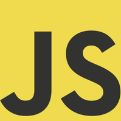

Olá, sou Thyago Rafael, um desenvolvedor web de Joinville - Santa Catarina, que trabalha com as tecnologias de desenvolvimento front-end.
Atento a boas práticas e novas tecnologias/ metodologias, foco na qualidade do trabalho, sempre o mantendo organizado e escalável.
Iniciei minha carreira com estagios na SoftExpert e na agência digital A2C, onde pude trabalhar para clientes como Tigre, Docol e Dafra.
Atualmente faço parte do time da Softers, uma empresa inovadora e divertida, desenvolvendo as interfaces do Agência Sys e outros projetos internos e externos, utilizando metodologias agéis, trabalho em equipe e muito café.
O que eu faço

Javascript
Desenvolvimento de Javascript modular e escalável, MV* com Angular, iniciante em Node.
Nova tela inicial do sistema, com todas as informações do sistema apresentadas de uma forma mais objetiva e customizável, facilitando ainda mais a tomada de decisões e o controle das áreas da sua agência.
JavascriptPHPInterface
O Parlee é um sistema de chat online para atendimento e suporte aos clientes.
Converse com os visitantes do seu site em tempo real e gere mais oportunidades de negócio.
Você poderá usar o Parlee para atender os clientes, suporte rápido, dúvidas na hora da compra, pra falar com os fornecedores e muito mais.
JavascriptPHPInterface
Novo módulo de gerenciamento de arquivos do sistema.
Com uma interface nova, a área de arquivos permite que você anexe PDF, JPG, ou qualquer outro formato.
JavascriptInterface
Experiência Profissional
Softers Sistemas de Gestão/ Agência Sys
Front-end Engineer
Desenvolvimento de interfaces de projetos como Agência Sys e Parlee.
Implantação de workflow de desenvolvimento front-end baseado em Gulp, SASS e Javascript Module Pattern.
JavascriptJQueryHTML5CSS3WordpressSASSGulpScrumTwitter BootstrapPHP
Desenvolvedor PHP
Membro do time de desenvolvimento e manutenção do Agência Sys.
PHPZendJavascriptJQueryJQuery UIMySQLHTMLCSS
A2C Agência
Estágio Desenvolvedor PHP/ Front-end
Focado em soluções para as marcas do Grupo Tigre, além de realizar jobs para Docol, Dafra e Athletic.
PHPSymfonyWordpressJavascriptJQuerySQL ServerMySQLHTMLCSS
Softexpert Software
Estágio Desenvolvedor PHP
Estágio em desenvolvimento de software.
PHPJavascriptSQL Server